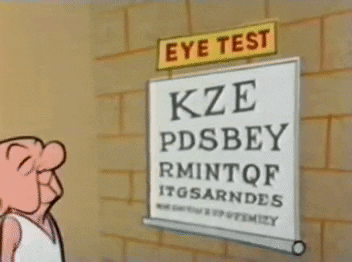

Estrategias de Testing para Frontend
Juan Felipe Avalo
Como asegurar que un programa no tenga defectos
¿Es imposible?
- Unknown unknowns
- Complejidad creciente
- Sistemas no funcionan en un vacío
Formas de atrapar defectos en el desarrollo de software
- Buenas prácticas
- Pull Request
- Tests automatizados
Pruebas en el desarrollo de software
Testing
- Criterios para asegurar la calidad de un programa.
- Cumple con sus propósitos.
- Admite todo tipo de inputs sin causar problemas.
- Es usable.
- No rompe todo el sistema al ser aceptado.
- Importante en todos los niveles de la organización.
Manuales
Automatizados

Test Levels


Qué debe cumplir un buen test
- Rápido
- Testea interfaces, no implementación
- Detecta bugs
- Consistente
- Claro
Testing en Frontend
¿Por qué tendría que ser distinto a Backend?
- Difícil tener un oráculo de la verdad.
- Difícil automatizar test visuales. 
¿Qué se puede hacer?
- Probar manualmente cada cambio.
- Usar herramientas para hacer visual diffs.
- Usar herramientas para probar la estructura de la página.
- Ver que al menos la página es compilada (smoke test).
- Verificar solo casos con una condición fail/pass concreta.
- Lógica vs presentación
Como probar en react
En general
- Existen herramientas para:
- ejecutar test unitarios en javascript
- ayudar en el desarrollo de pruebas (helpers)
Jest
- Test runner
- Ofrece utilidades para hacer asserts
- Ofrece utilidades para hacer mocks
- Puede realizar comparaciones por snapshots
- El uso de snapshots es bueno para asegurar que la estructura de un componente sea consistente.
- No asegura nada visualmente.
- Acoplado a la implementación.
Enzyme
- Creado por AirBnB
- Herramienta con helpers para React.
- Ej: Acceder a states, props, hijos
- shallow rendering
- Solo se renderea componente.
- Permite sumergirse en componentes hijos.
- Evita testear dependencias.
React Testing Library
The more your tests resemble the way your software is used, the more confidence they can give you. –Kent C. Dobbs
- No usa shallow rendering por diseño.
- Monta el componente con todas sus dependencias.
- Solo mocks a servicios muy lentos/críticos
Recomendaciones
Enzyme vs React Testing Library
- Ambos hacen tareas similares.
- Distintos enfoques.
- Enzyme tiende a introducir más coupling con la implementación.
- Permite entrar con mayor detalle al estado del componente.
- Tendencia a que se rompan tests por cambios pequeños
- React Testing Library tiene el potencial de ser más robusto
- Probar simulando a un usuario es bastante intuitivo.
- No acceder a estado interno no ha sido problema (hasta ahora).
- Si se rompe test es más significativo.
Sobre los unit tests
- Importante pensar en pruebas que sean significativas.
- Deben dar información si se rompen
- Evitar escribir componentes gigantes.
- Tienen más dependencias
- Más fácil que se rompan.
- Hacer tests sobre componentes que tengan cambios de estado.
Sobre snapshots
- Snapshots son útiles en ciertos casos:
- Componentes de presentación.
- Comportamiento se refleja en el árbol de componente.
- Como smoke test.
- Pueden traer dificultades asociadas:
- Falsos positivos: Componente cambia sin que afecte su funcionalidad.
- Componentes muy grandes:
- No se entienden bien.
- Son ignoradas.